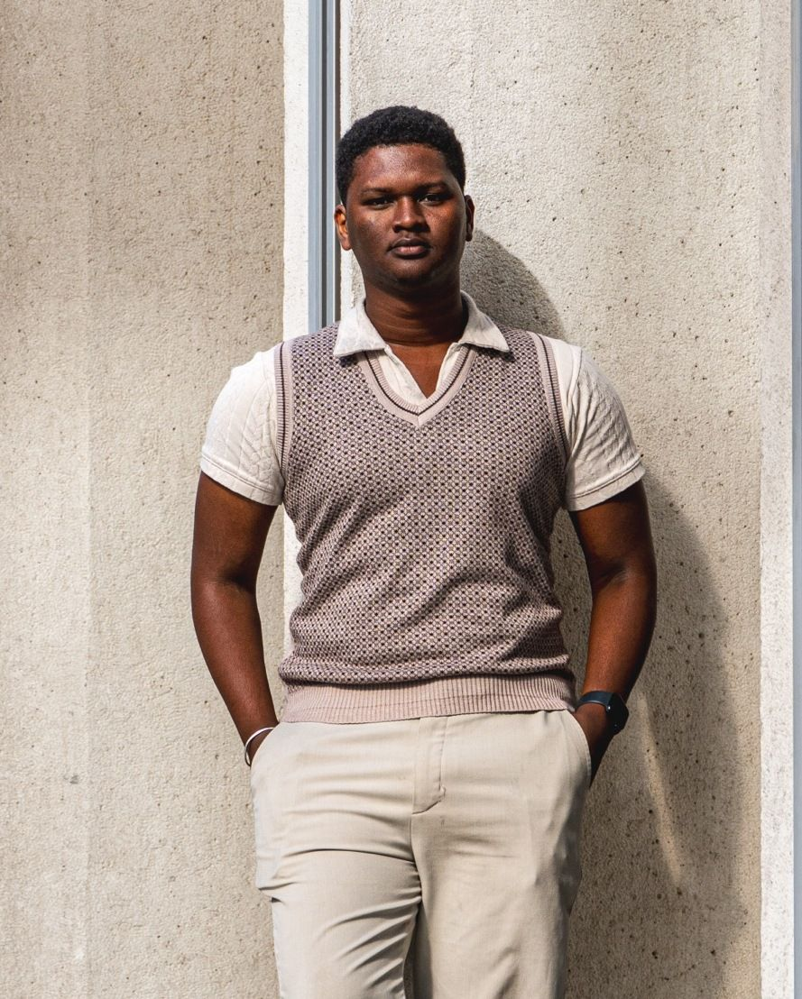
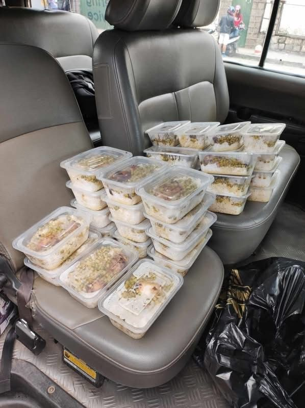
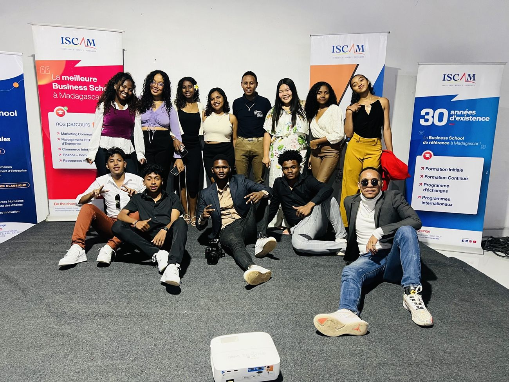
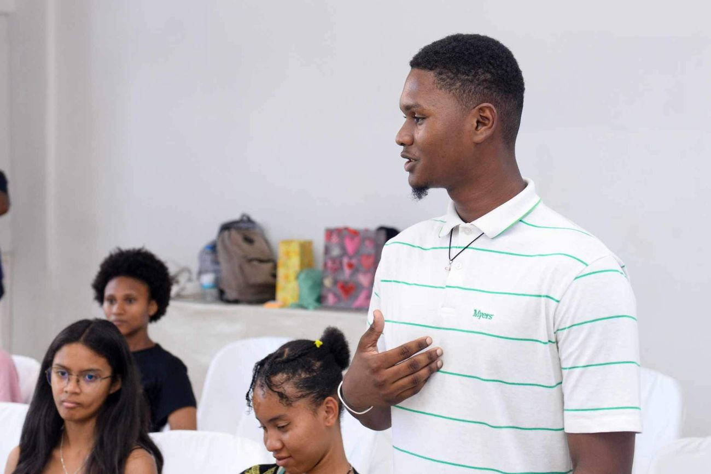

Grandir, ce n’est pas plaire en devenant un autre. C’est être utile en restant soi.

GénérositéPlus de 70 repas partagés à Noël avec Isc’America. L’identité du baume de sa mère, créée à distance. Du temps donné sans compter quand un projet lui plaît.

EntraideÉlève référent pendant deux ans. Conseiller de son successeur à la tête de l’association. Un guide et une fiche de poste pour celui qui le remplace chez Tekwin.

ÉlévationApprendre en continu : master, coaching d’art oratoire, livres. Écrire des manuels pour que d’autres progressent. Former « les leaders de demain à domicile ».
Grandir, ce n’est pas plaire en devenant un autre. C’est être utile en restant soi.
Madagascar · Paris · Ferrières-en-Brie. Les écrans des applications sont des captures réelles ; les projets « en préparation » ne sont pas terminés.